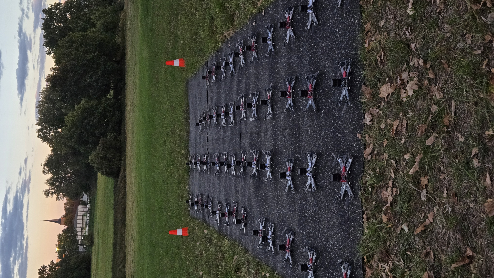
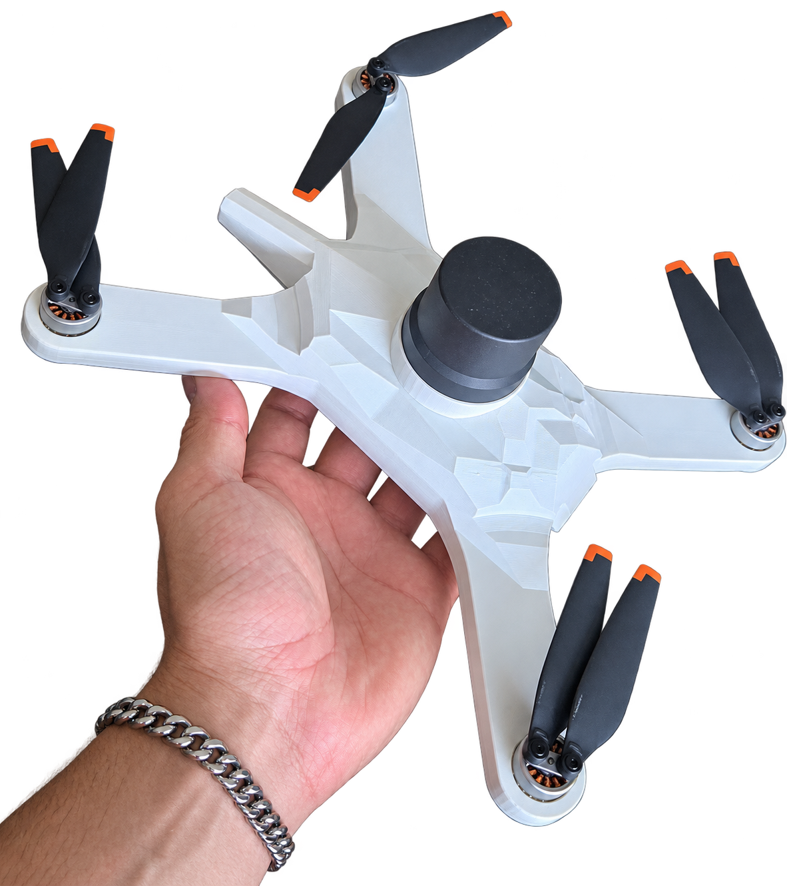

Technische Hauptverantwortung
Mein Studienkollege und ich bildeten das Entwicklungskernteam. Wir entwickelten das System von Grund auf und verbanden die einzelnen Entwicklungsbereiche bis zum funktionsfähigen Gesamtsystem.
PROJEKTFALLSTUDIE / DRONESPERHOUR
Von Grund auf zu wiederholt erfolgreich geflogenen LED-Shows mit 50 Drohnen gleichzeitig. Entwickelt in 1,5 Jahren mit einem Studienkollegen, jeweils durchschnittlich 20 Wochenstunden neben dem Studium und gemeinsamer technischer Hauptverantwortung.
Meine Aufgaben und Ergebnisse01 / ERPROBUNG
Aufnahmen aus der Entwicklung und Erprobung des Drohnenshow-Systems: eine LED-Testshow, die Vorbereitung auf dem Testfeld und die erste Drohne mit Hülle.


02 / VERANTWORTUNG
Mein Studienkollege und ich bildeten das Entwicklungskernteam. Wir entwickelten das System von Grund auf und verbanden die einzelnen Entwicklungsbereiche bis zum funktionsfähigen Gesamtsystem.
Ich war an Anforderungsanalyse, CAD-Konstruktion, PCB-Design, Embedded-Software, Prototypenaufbau, Systemintegration und Validierung beteiligt. Dazu gehörten Systemtests, Fehleranalyse und konstruktive Überarbeitung.
Eine technische Ansprechperson stand uns im Unternehmen nicht zur Verfügung. Die benötigten Kenntnisse erarbeiteten wir uns selbst. Ich betreute außerdem internationale Praktikanten, die das Kernteam zeitweise unterstützten.
03 / ENTWICKLUNGSWEG
Mechanik, Elektronik und Software mussten als zusammenhängendes System funktionieren. Meine Arbeit reichte von der Ausarbeitung einzelner Lösungen bis zur gemeinsamen Integration und Erprobung.
CAD, FEM und Prototypenbau
Eigene Leiterplatten und Hardwareaufbau
Mitwirkung und Abstimmung der Schnittstellen
Teilsysteme zusammenführen, Fehler analysieren und Änderungen erneut erproben.
ENTWICKLUNGSBEISPIEL / INTEGRATION
ZUSÄTZLICHE VERANTWORTUNG / KONSTRUKTION
ENTWICKLUNGSBEISPIEL / SENSORINTEGRATION
Auch die Versorgung gehörte zur Integration. Im System nutzten wir unterschiedliche Versorgungszweige für Funkmodul, Steuerung und Sensorik. Für das Funkmodul war ein eigener gefilterter und geregelter Zweig vorgesehen.
TECHNISCHER AUSTAUSCH
Weitere Einblicke in meinen Beitrag und die übrigen Projekte finden Sie im Portfolio.